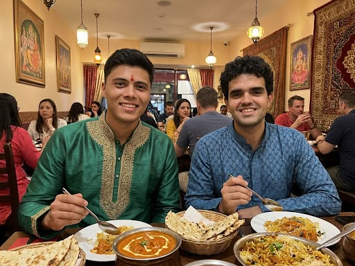

The family at their own table.
Who we are
We are the Nahasapeemapetilon family, and PAALHU is our kitchen opened up to the neighbourhood. Our father is in charge of the stoves, our mother welcomes every guest, and the family runs a small team of nine people.
How PAALHU started
Our parents grew up in Kolkata, West Bengal. After arriving in Madrid in 2004, they began cooking traditional recipes for friends at home. In 2011, they opened PAALHU at Calle de Pirineos 55.
What makes us different
- Homemade spice blends.
- Naan and breads baked to order.
- Mild, medium and hot spice levels.
- Vegetarian and vegan dishes.
- Takeaway and home delivery available.